High performance insulation systems
Closed-cell elastomeric sheets and tubes, K-Fonik acoustic foam and installation accessories.
K-Flex ST Sheets — available finishes
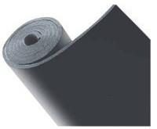

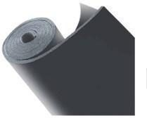
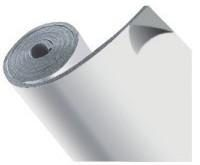
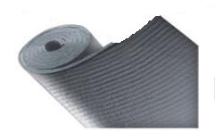
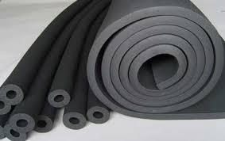
K-Flex ST Sheets
For ducts, large flat surfaces, equipment and large-diameter pipes. Used in industrial air-conditioning & refrigeration, process lines, heating, tanks, vessels, under-deck roof insulation and floor & wall lining. Available with protective coverings and one-side self adhesive.
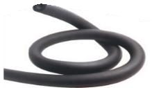
K-Flex ST Tubes
Condensation control for AC & refrigeration piping and fittings — HVAC, industrial process, oil & gas, petrochemicals, low-temperature cryogenics and plumbing. Available with protective glass fabric and co-extruded polymeric covering for UV & mechanical protection.
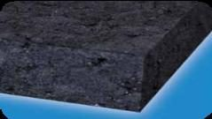
K-Flex K-Fonik Acoustic Systems
Open-cell elastomeric foam for HVAC and industrial noise control: duct lining, AHU rooms, DG set enclosures, building noise control, marine & offshore. Ultra-Fresh® antimicrobial protection, clean fibre-free installation, excellent sound absorption.
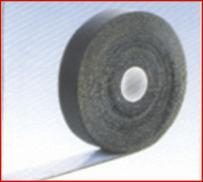
K-Flex Joint Sealing Tape
Self-adhesive elastomeric tape for sealing joints and seams in K-Flex sheet and tube installations.
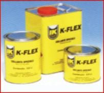
K-Flex Glue
Contact adhesive for K-Flex insulation. Available in 5-litre and 30-litre tins.
- K-Flex Glue5 L
- K-Flex Glue30 L
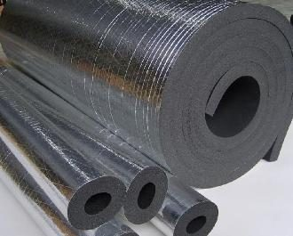
Alu-Clad Tubes & Pipe Fittings
Aluminium-faced tubes and pre-formed fitting covers for neat, protected finishes on exposed pipework.
K-Flex ST Sheets & Tubes — technical data
| Parameter | K-Flex specification |
|---|---|
| Material | Microcellular closed-cell nitrile rubber insulation |
| Temperature range | –200 °C to +116 °C* |
| Thermal conductivity λ W/(m·K) EN 12667 (DIN 52612) – EN ISO 8497 (DIN 52613) | –20 °C = 0.034 / 0 °C = 0.036** / +20 °C = 0.038 |
| Corrosion risk | DIN 1988/7** ; pH neutral |
| Permeability μ EN 12086 (DIN 52615) | > 7000 |
| Fire rating BS 476 P 6 & 7 | Class "O" |
| Fire propagation & surface spread of flame BS 476 P 6/7 | Total index (I) < 12; sub index (i) < 6 |
| Reaction to fire | Self-extinguishing, does not drip |
| Resistance to building material | Very good |
| Ozone depletion potential | Zero |
| Health aspects | Dust & fibre free |
| Environment aspects | CFC / HCFC free |
| Emission of volatile organic compounds | VOC / SVOC free |
| UL 94 | UL 94 approved |
| FM Global | FM Global approved |
*For applications below –50 °C please contact us. **Supervised by an independent institute. For outdoor use apply suitable finish and protection. Data from manufacturer; users should confirm suitability for their application.
K-Flex K-Fonik open-cell acoustic insulation — technical data
| Parameter | K-Flex specification |
|---|---|
| Material | Processed elastomeric open-cell nitrile rubber insulation |
| Density | 140 – 180 kg/m³ (high density up to 240 kg/m³ available) |
| Thermal conductivity (λ) EN 12667 – EN ISO 8497 | 0.047 W/m·K |
| Temperature range | –20 °C to +105 °C |
| Fire class | Class 1 rating, BS 476 Part 7 |
| Health & environment | Fibre free, CFC/HCFC free |
| Air erosion resistance, ASTM C 1071-05 (section 12.7) | Pass |
| UL approved | UL 94 (HBF, HF1 & HF2) per UL 94, 1996 |
| Resistance to building material | Very good |
| Ozone depletion potential | Zero |
| Tolerance | ± 1 – 2 mm |
Coefficient of sound absorption
| K-Fonik thickness | 125 Hz | 250 | 500 | 1000 | 2000 | 4000 | NRC |
|---|---|---|---|---|---|---|---|
| 10 mm | 0.00 | 0.05 | 0.15 | 0.55 | 0.90 | 0.85 | 0.42 |
| 15 mm | 0.05 | 0.10 | 0.25 | 0.75 | 0.95 | 0.85 | 0.49 |
| 20 mm | 0.03 | 0.16 | 0.56 | 0.56 | 0.86 | 0.80 | 0.50 |
Insulation & civil accessories
Supreme civil accessories division: XPS boards, PEB roof insulation, joint systems, vapour barriers, membranes and protection.
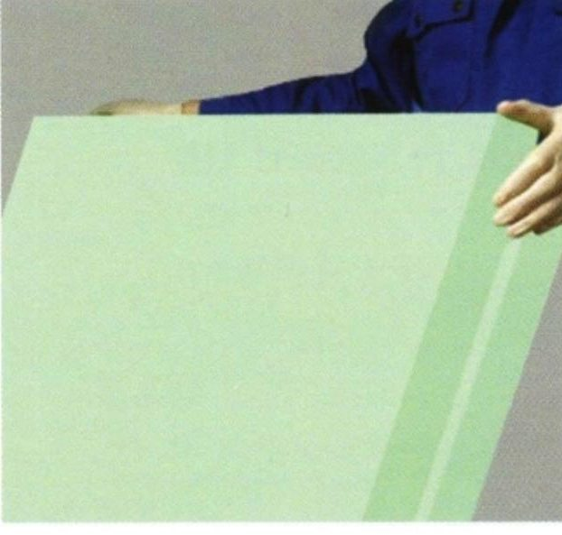
Insu Board
Extruded polystyrene (XPS) rigid thermal insulation board with closed-cell structure, high compressive strength, high R-value and water absorption below 1% by volume. For roofs, under-deck, external/internal/cavity walls, EIFS, cold-storage floors and underground construction.
- Thickness20, 25, 30, 50, 75, 100 mm
- Standard size600 × 1250 mm
- FireDIN 4102, Class B2 & B1
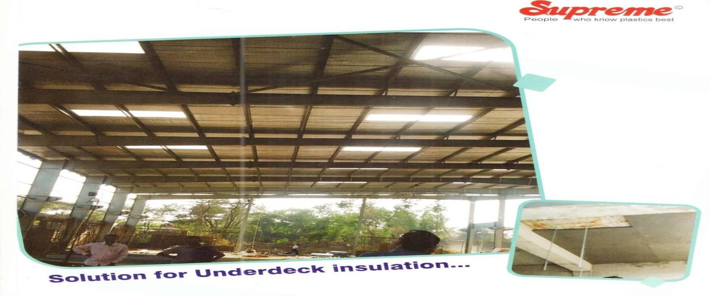
Insu Shield
Formerly SIL-XL-C
Roof insulation with aluminium foil on both sides — a radiant barrier and vapour barrier for pre-engineered buildings, installed over purlins together with the metal roofing. Also acts as a secondary waterproof barrier.
- Operating temp.–40 °C to +115 °C
- λ at 23 °C0.0328 W/m·K
- Water absorption< 2%
- FireClass 1 (BS 476 P7), Class 0 (BS 476 P6)*
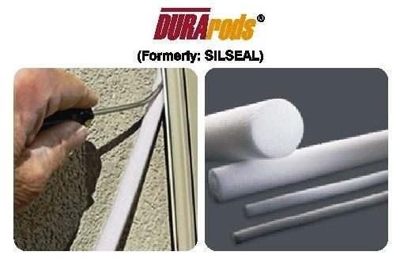
Dura Backer Rod
Formerly Silseal
Closed-cell foam backer rod placed in joints before sealant — controls sealant depth and prevents three-sided adhesion.
Sizes & coil lengths
- Ø 6 mm1000 m / coil
- Ø 8 mm850 m / coil
- Ø 10 mm50 m / coil
- Ø 12 mm50 m / coil
- Ø 15 mm50 m / coil
- Ø 20 mm25 m / coil
- Ø 25 mm25 m / coil
- Ø 30 mm25 m / coil
- Ø 40 mm10 m / coil
- Ø 50 mm10 m / coil
- Ø 60 mm10 m / coil
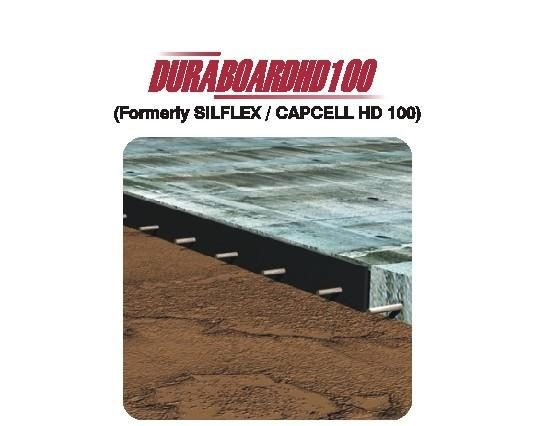
Dura Board HD 100
Formerly Silflex / Capcell HD 100
High-density closed-cell expansion-joint filler board for concrete joints in slabs, walls, roads and structures.
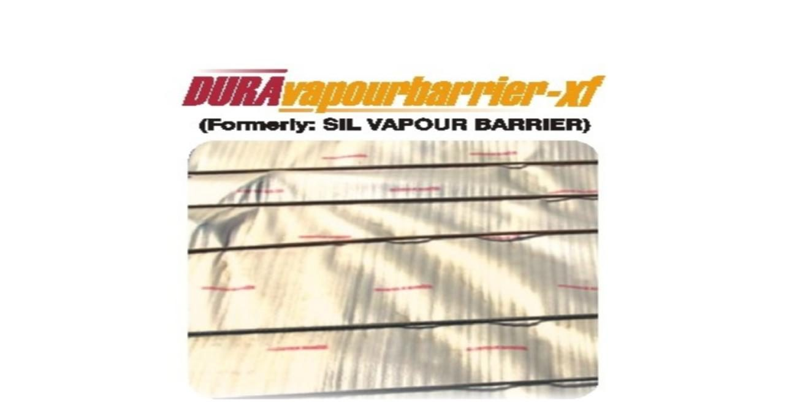
Dura Vapour Barrier XF
Formerly SIL Vapour Barrier
Vapour barrier layer that protects insulation and structures from moisture ingress.
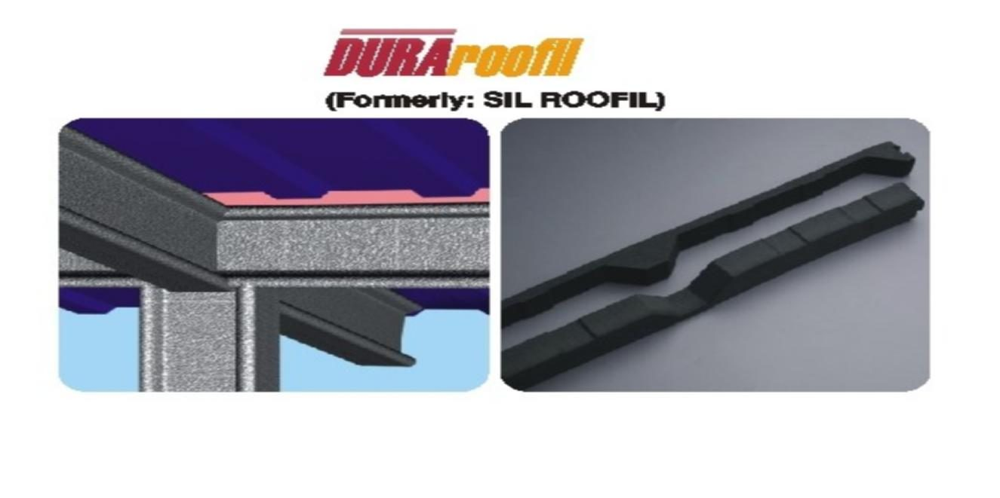
Dura Roof Fill
Formerly SIL Roofill
Profiled foam filler that closes the gaps under metal roof sheets at eaves and ridges — keeping out dust, rain, birds and insects.
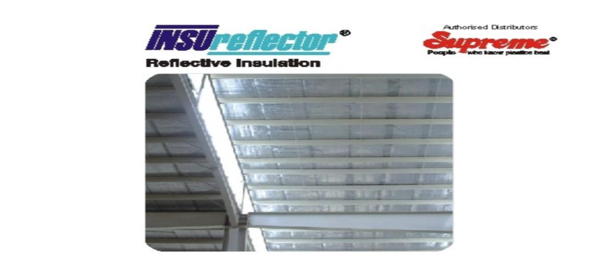
Insu Reflector
Reflective insulation that cuts radiant heat gain under roofs and in walls.
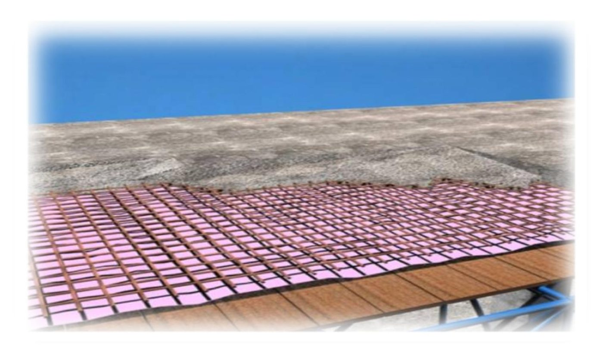
Shuttering Mate
Shuttering accessory for concrete formwork, supporting neat and consistent concrete finishes.
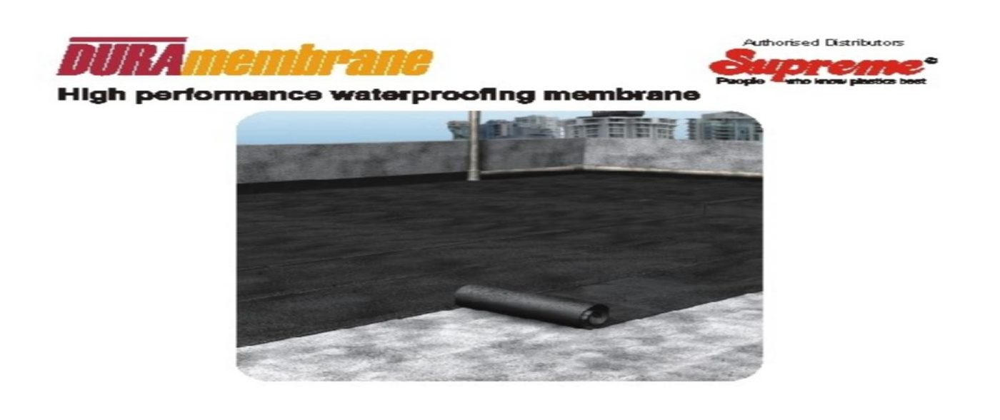
Dura Membrane
High-performance waterproofing membrane for roofs, terraces and wet areas.
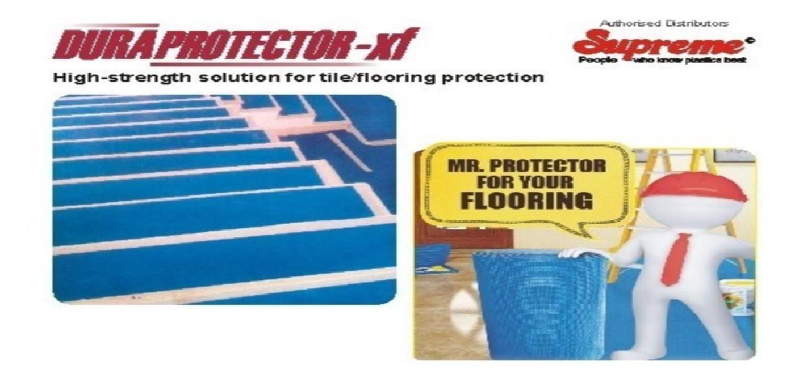
Dura Protector XF
High-strength temporary protection sheet for new flooring and tiles during construction work.
*Class 0 fire propagation applies to Insu Shield with specialised laminated aluminium foil.
Insu Board applications
Under-deck insulation · floor insulation · cavity walls · external wall insulation systems.
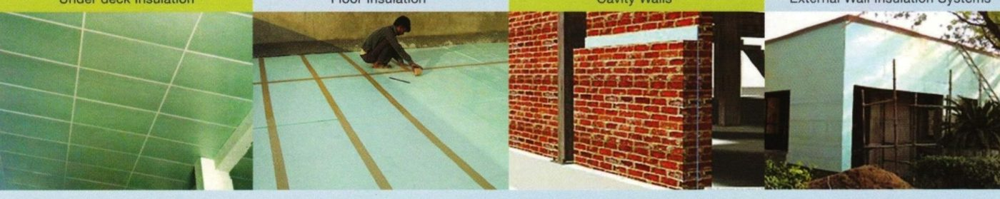
Insulation wool
Polyester, mineral and ceramic wool for thermal, acoustic and high-temperature use.
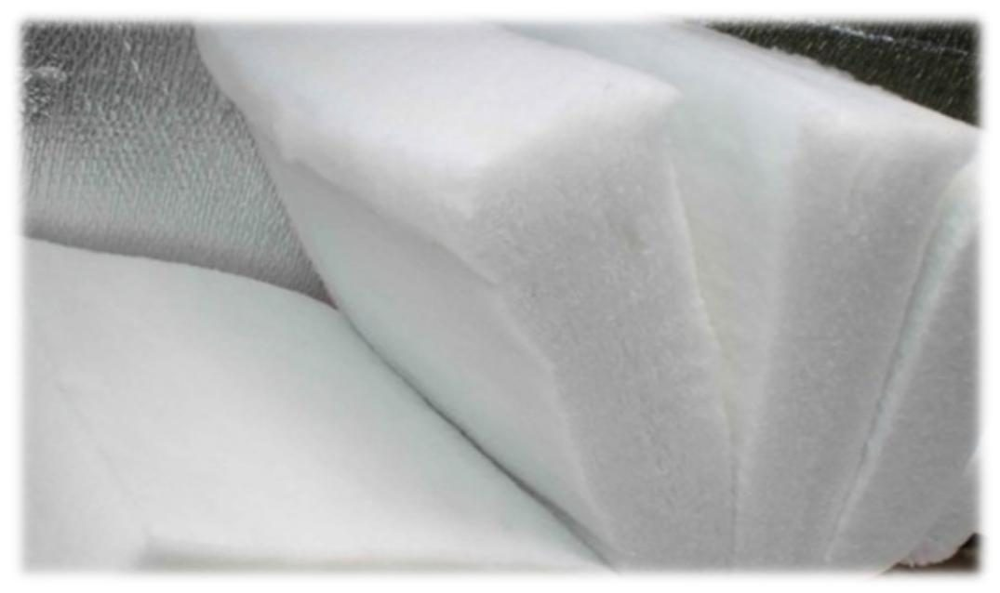
Polywool
Polyester wadding — fibre insulation for thermal and acoustic applications.
- 50 mm × 1.2 × 15 m1000 GSM (18 m²)
- 50 mm × 1.2 × 20 m500 GSM (24 m²)
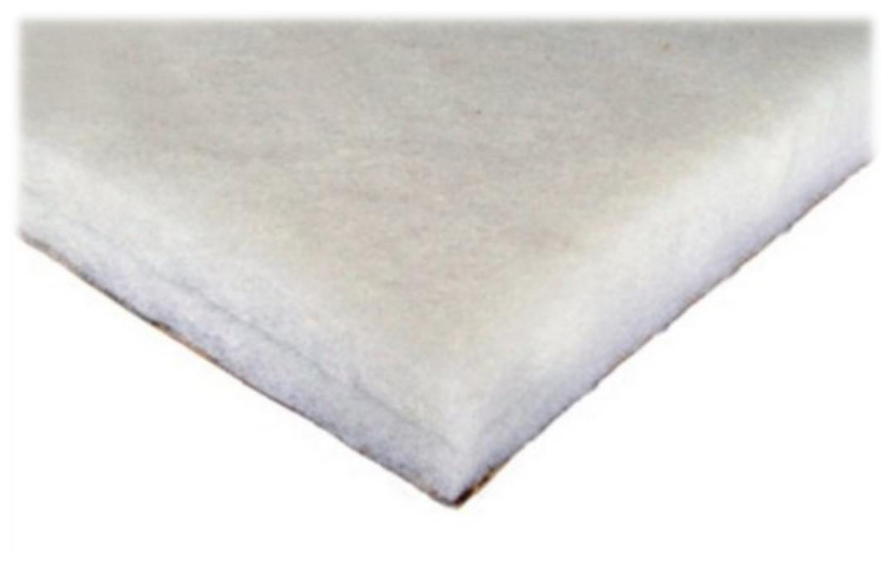
Polywool Board
Rigid polyester wadding board for panels and acoustic infill.
- 20 mm × 6 × 4 ft2000 GSM
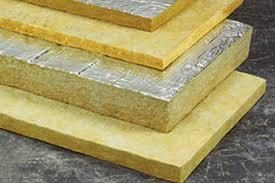
Rock Wool
Mineral wool slabs and rolls for thermal insulation, fire protection and acoustic absorption.
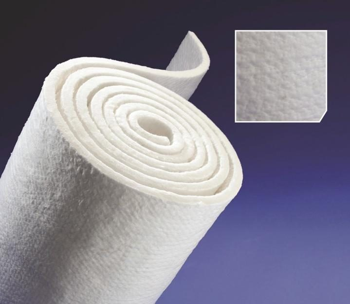
Ceramic Wool
High-temperature ceramic fibre blanket for furnaces, kilns, boilers and hot process equipment.
Ducting, tapes & adhesives
Everything to connect, seal and finish air-conditioning and ventilation installations.
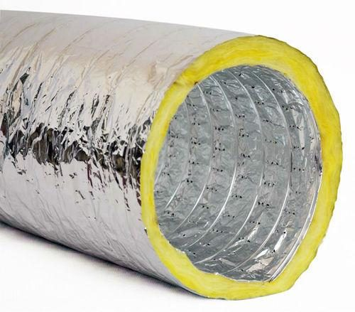
Insulated Flexible Duct
Pre-insulated flexible duct for AC supply and return connections.
- Sizes4″, 6″, 8″, 10″, 12″, 14″
- Length7.62 m
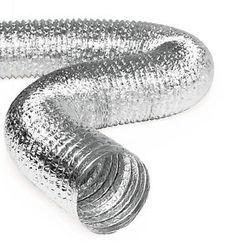
Uninsulated Flexible Duct
Lightweight flexible duct for ventilation and exhaust connections.
- Sizes4″ – 14″
- Length7.62 m
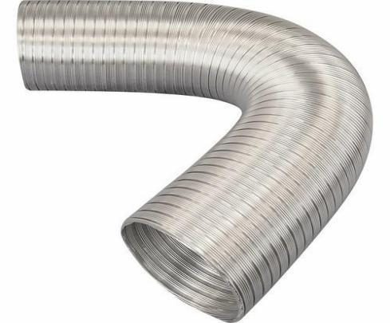
Aluminium Flexible Duct Pipe
Semi-rigid aluminium duct for kitchen exhaust, dryers and ventilation.
- Sizes4″ – 14″
- Length7.62 m
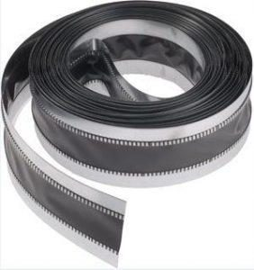
Flexible Duct Connector
Canvas connector that isolates fan and AHU vibration from ductwork.
- 45 × 60 × 45 mm (2″)25 m
- 45 × 100 × 45 mm (4″)25 m
- 45 × 150 × 45 mm (6″)25 m
Tapes
A full range of tapes for insulation, ducting and finishing work.
- Black tape
- White tape
- Aluminium foiled tape
- Non-adhesive white tape
- Double-sided tape
- Nitrile tape
Glue
Adhesives for elastomeric insulation and general bonding.
- K-Flex Glue5 L
- K-Flex Glue30 L
- Real Bond Glue5 L
Acoustic solutions
Absorbers, diffusers and insulation to make rooms sound right.
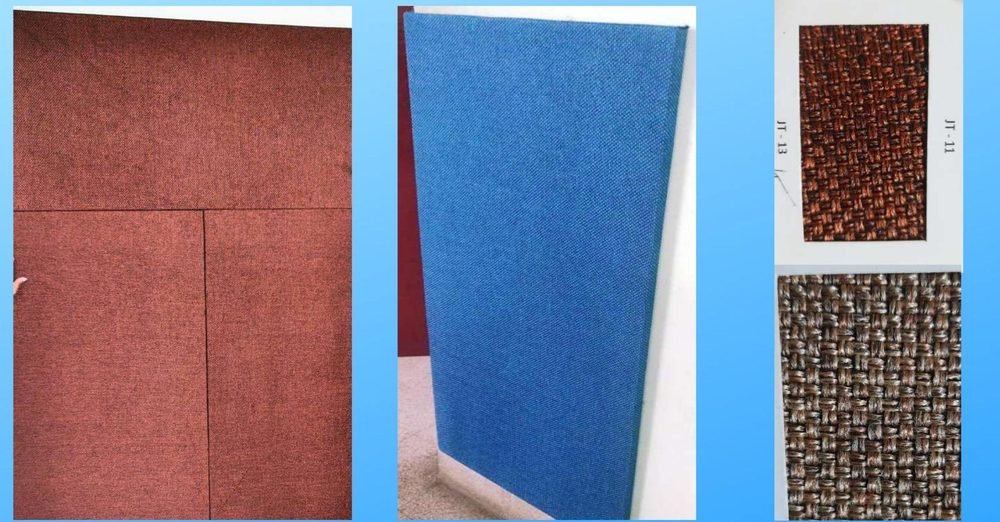
Acoustic Wall Panels
Fabric-wrapped absorptive panels in a choice of colours and weaves for theatres, studios, offices and auditoriums.
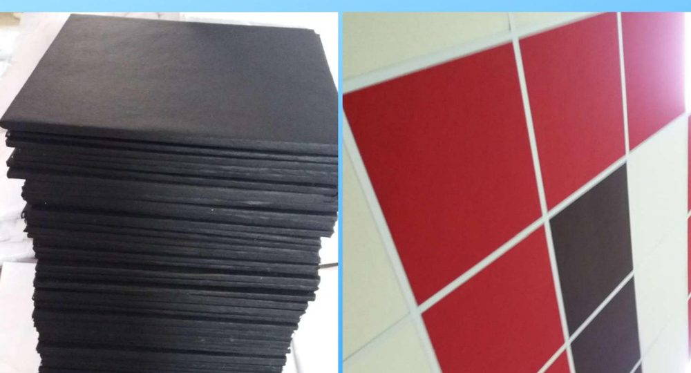
Acoustic Ceiling Tile
Sound-absorbing ceiling tiles to control reverberation in large rooms.
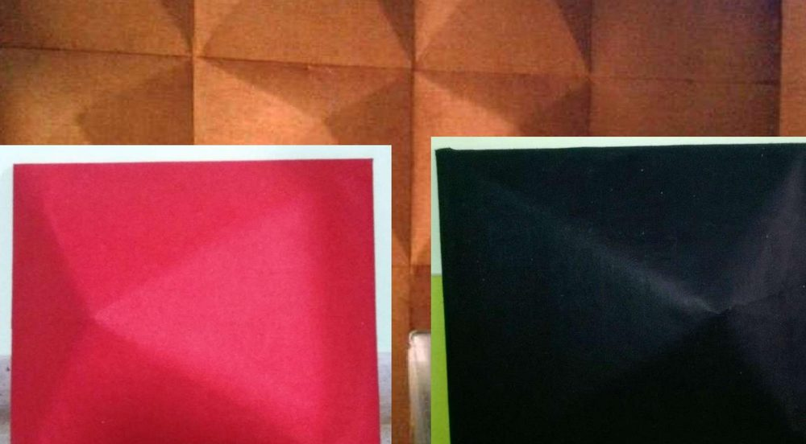
Acoustic Wall Diffuser
Sculpted diffuser panels that scatter reflections for a natural, even sound field.
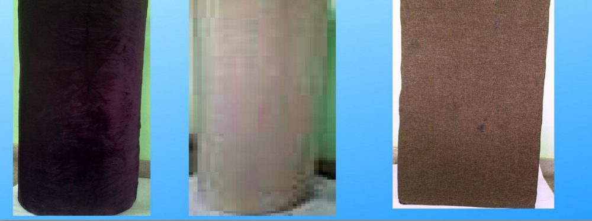
Corner Diffuser / Bass Trap
Corner units that tame low-frequency build-up in home theatres and studios.
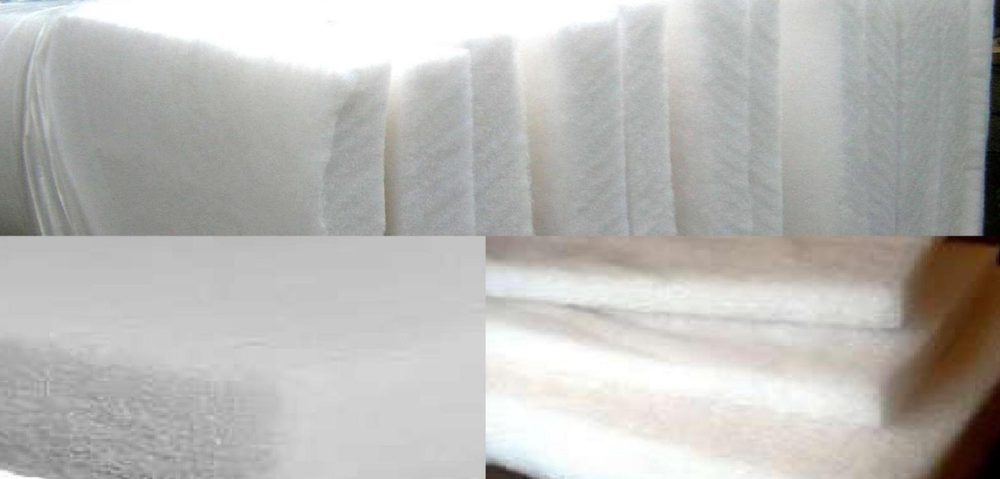
Acoustic Insulation Material
Acoustic infill and absorptive wool for partitions, panels and ceilings.
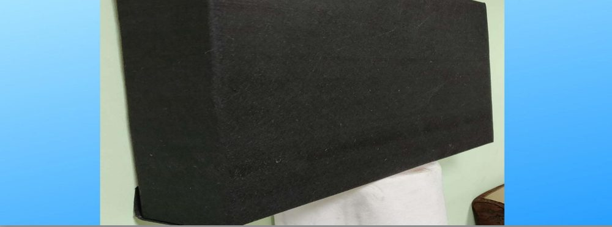
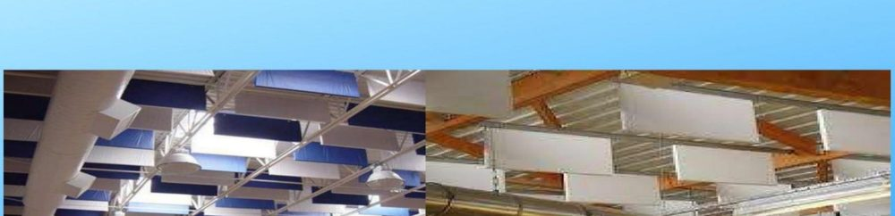
Acoustic Baffles
Suspended baffles for high-ceiling halls, auditoriums and industrial spaces.
K-Fonik Acoustic Foam
Open-cell elastomeric acoustic insulation for duct lining, AHU rooms and DG enclosures.
Acoustic Treatment Projects
Need a complete room treated? See our home theatre, studio and auditorium work.
Construction accessories
Joint sealing, access and ground-works products for civil construction.
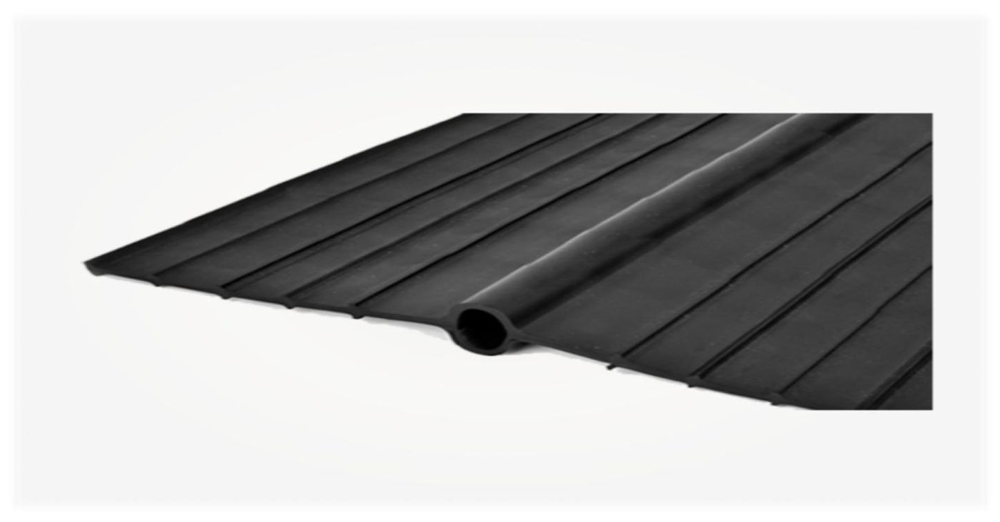
PVC Water Stopper
PVC waterstop cast into construction and expansion joints to block water passage in basements, tanks and retaining walls.
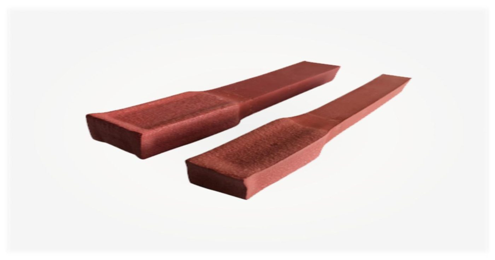
Swellable Water Bar
Hydrophilic strip that swells on contact with water to seal construction joints.
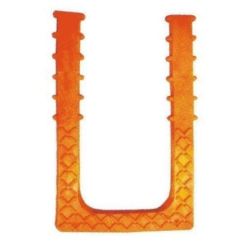
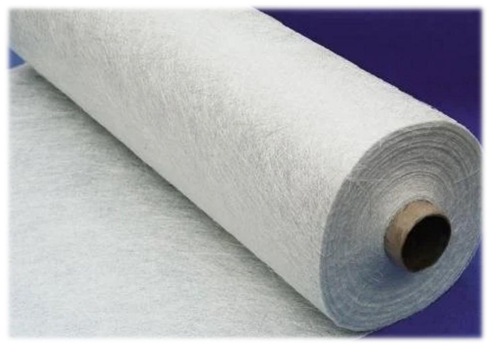
Non-Woven Geo Textile Fabric
Geotextile for separation, filtration and drainage in roads, landscaping and foundations.
Need a price or a spec for your site?
Tell us the product, size and quantity — we'll get back with availability and a quote.